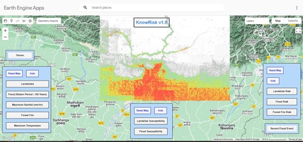

Recent Project
Google Earth Engine App : KnowRisk V1.0
Know Risk is a cloud computing platform for natural hazards (e.g., hydrological, meteorological, geological and geomorphological hazards) analysis, susceptibility zonation and risk quantification. It is a real-time decision support system (DSS) for disaster planners, disaster management authorities, linear infrastructure companies (roads/railways/pipelines/transmission lines), urban planners, conservation planners and other sectors. This app processes long term historical remote sensing data of natural hazards on any place on the earth; and outputs the locations of the hazards and the terrain's susceptibility map to those hazards in the future; using its in-built on-the-fly data processing capabilities using machine learning.
In this cloud-based app, we process the disaster planning data with one click- without needing any costly field data collection campaigns and expensive computational resources.
Completed Projects
Local Disaster and Climate Resilience Plan
Chautara Sangachokgadhi Municipality
Commercial Building Design and Analysis
Multipurpose Community Development Service
Risk Sensitive Land-use Plan
Beleka Municipality
Service Road Design|Civil 3D
Lapche Khola Hydropower Project
About Me
A Civil Engineering graduate from Khwopa Engineering College. I'm a young geospatial enthusiast who has proven experience and knowledge in spatial analysis, cartography and disaster management. Having said that, I've always been passionate about GIS and Remote Sensing from the college days. I've practically expertized on the field of spatial data handling, photogrammetry and cartography and was offered Geospatial Consultant/ Design Engineer position at Geo3D Modelling (P) Ltd. Working on a Hydropower sector as an Engineer In-charge, I possess excellent communication and leadership skills. I, on the other hand, have a good understanding of geo-hazards and hazard mapping, risk zonation, and susceptibility simulation. I've also worked with PhD researchers and have assisted them in inventory mapping, susceptibility modeling, and risk visualization web app development. My experience with Chautara Sangachokgadhi Municipality as Disaster Risk Reduction – Young Leaders Fellow is an excellent example of disaster information and risk management professionalism. During the time of fellowship, I've helped the municipality in disaster-related critical infrastructure mapping, geodatabase formulation, and interactive amenities map. Additionally, I've helped the municipality with LDCRP documentation and publication. Moreover, I've supported RIMES team for Strengthening Last Mile Communication (SLMC) for Asia and Pacific at Melamchi municipality in EWS, User Needs, HVCA assessment, and mapping as Information and Disaster Risk Management Consultant. With many of these qualities, I am now actively looking for a Master's Degree in Geospatial Data Science and Machine Learning.